from sklearn.linear_model import LinearRegression
import numpy as np
import matplotlib.pyplot as plt
%matplotlib inline
# Retina display
%config InlineBackend.figure_format = 'retina'Basis Functions Regression
f_true = lambda x: np.cos(1.5 * np.pi * x) + (1+x)*np.sin(0.5 * np.pi * x)
f = lambda x: f_true(x) + np.random.randn(*x.shape) * 0.3
x = np.linspace(0, 1, 100)
y = f(x)
plt.plot(x, y, 'o', label='data')
plt.plot(x, f_true(x), label='true')
plt.legend(loc='best')<matplotlib.legend.Legend at 0x7f883e31b850>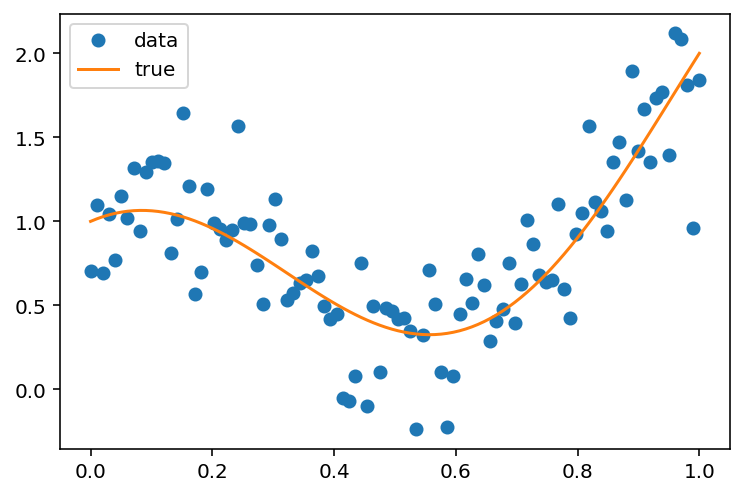
# Fit a phi function transformed linear model
def y_hat_basis(x_train, y_train, x_test, phi):
model = LinearRegression()
model.fit(phi(x_train), y_train)
return model.predict(phi(x_test))phi_linear = lambda x: x.reshape(-1, 1)
phi_poly = lambda x, d: np.stack([x**i for i in range(1, d+1)], axis=1)phi_linear(x).shape, phi_poly(x, 3).shape((100, 1), (100, 3))d = 5
plt.plot(x, phi_poly(x, d))
# add legend
plt.legend([fr'$x^{i+1}$' for i in range(d)], loc='best')<matplotlib.legend.Legend at 0x7f88340ee580>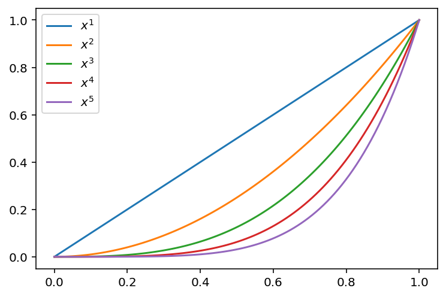
# Fit a linear model (identity basis)
y_hat_linear = y_hat_basis(x, y, x, phi_linear)
y_hat_poly_2 = y_hat_basis(x, y, x, lambda x: phi_poly(x, 2))
y_hat_poly_5 = y_hat_basis(x, y, x, lambda x: phi_poly(x, 5))
plt.plot(x, y, 'o', label='data')
plt.plot(x, y_hat_linear, label='linear')
plt.plot(x, y_hat_poly_2, label='poly 2')
plt.plot(x, y_hat_poly_5, label='poly 5')
plt.legend(loc='best')<matplotlib.legend.Legend at 0x7f882f704580>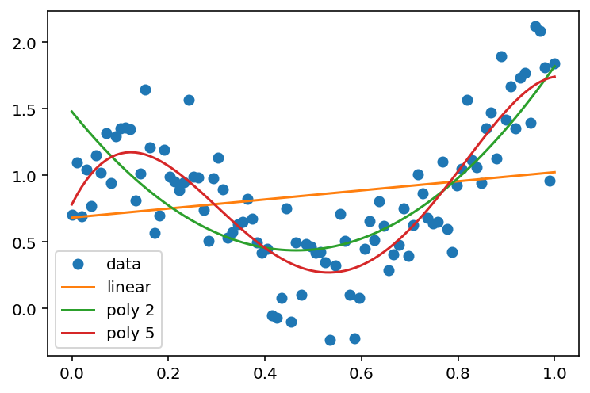
# sine basis
def phi_sine(x, d):
out = [x]
for i in range(1, d+1):
out.append(np.sin(2*np.pi*x*i))
# Append cosine
out.append(np.cos(2*np.pi*x*i))
return np.stack(out, axis=1)
# Plot sine basis
d = 3
plt.plot(x, phi_sine(x, d))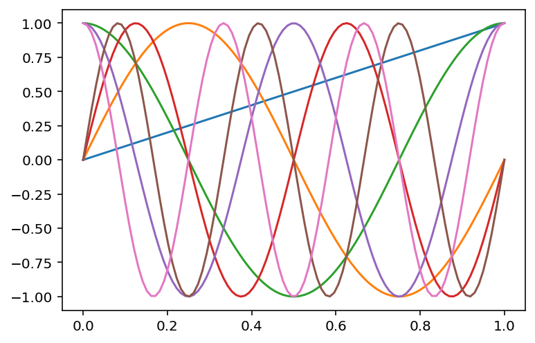
# fit sine basis model
y_hat_sine_3 = y_hat_basis(x, y, x, lambda x: phi_sine(x, 15))
plt.plot(x, y, 'o', label='data')
plt.plot(x, y_hat_linear, label='linear')
#plt.plot(x, y_hat_poly_2, label='poly 2')
#plt.plot(x, y_hat_poly_5, label='poly 5')
plt.plot(x, y_hat_sine_3, label='sine 3')
plt.legend(loc='best')<matplotlib.legend.Legend at 0x7f882f0f3130>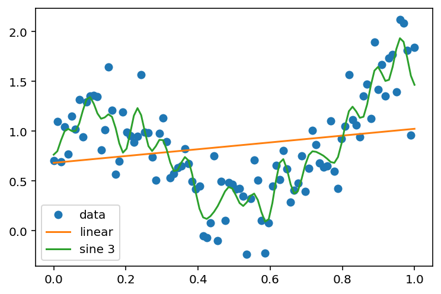
# Gaussian basis
def phi_gaussian(x, d, mu, sigma):
"""
x: (n,) denotes the input
d: (int) denotes the dimension of the basis
mu: (d,) denotes the mean of the basis
sigma: (d,) denotes the standard deviation of the basis
"""
out = []
for i in range(d):
out.append(np.exp(-(x-mu[i])**2 / (2*sigma[i]**2)))
return np.stack(out, axis=1)phi_gaussian(np.array([0.5]), 1, np.array([0.5]), np.array([0.1]))array([[1.]])phi_gaussian(np.array([1]), 1, np.array([0.5]), np.array([0.1]))array([[3.72665317e-06]])phi_gaussian(np.array([1]), 1, np.array([0.8]), np.array([0.1]))array([[0.13533528]])phi_gaussian(np.array([1]), 1, np.array([0.5]), np.array([4]))array([[0.99221794]])# Now, let us visualize the basis for different x but a single mu and sigma
x = np.linspace(0, 1, 100)
plt.plot(x, phi_gaussian(x, 1, np.array([0.5]), np.array([0.1])))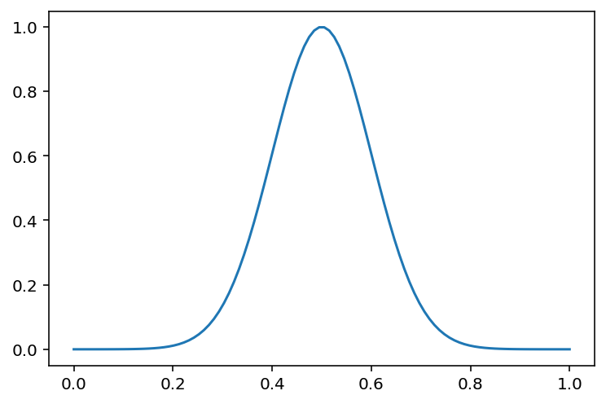
# Now, let us plot the basis for three different mu and sigma
d = 3
mu = np.linspace(0, 1, d)
sigma = np.ones(d) * 0.1
plt.plot(x, phi_gaussian(x, d, mu, sigma))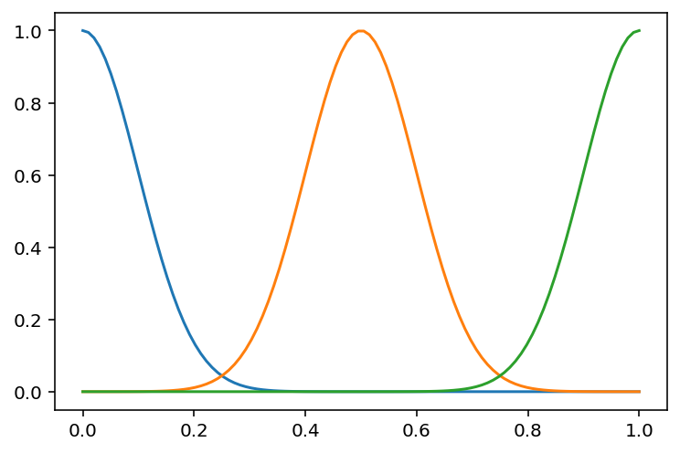
# We are seeking coefficients for the basis functions
# Let us plot the basis functions for different coefficients
d = 3
mu = np.linspace(0, 1, d)
sigma = np.ones(d) * 0.1
coeffs = np.array([0.2, -0.1, 0.6])
plt.plot(x, phi_gaussian(x, d, mu, sigma) @ coeffs)
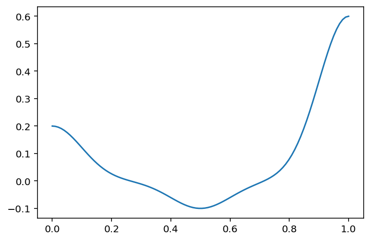
# Now, let us fit a Gaussian basis model
d = 5
mu = np.linspace(0, 1, d)
sigma = np.ones(d) * 0.1
y_hat_gaussian_5 = y_hat_basis(x, y, x, lambda x: phi_gaussian(x, d, mu, sigma))
plt.plot(x, y, 'o', label='data')
plt.plot(x, y_hat_linear, label='linear')
#plt.plot(x, y_hat_poly_2, label='poly 2')
#plt.plot(x, y_hat_poly_5, label='poly 5')
plt.plot(x, y_hat_sine_3, label='sine 1')
plt.plot(x, y_hat_gaussian_5, label='gaussian 5')
plt.legend(loc='best')<matplotlib.legend.Legend at 0x7f882ed85c70>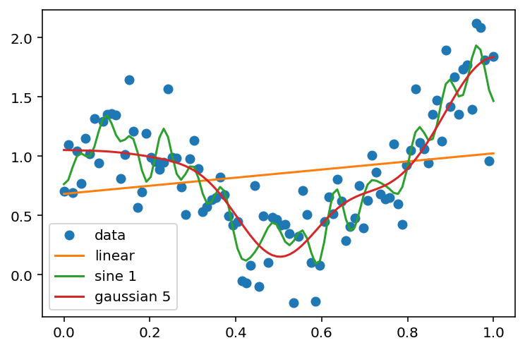
# Now, let us visualize the different Gaussian basis functions and their coefficients
d = 5
mu = np.linspace(0, 1, d)
sigma = np.ones(d) * 0.1
X = phi_gaussian(x, d, mu, sigma)
plt.plot(x, X)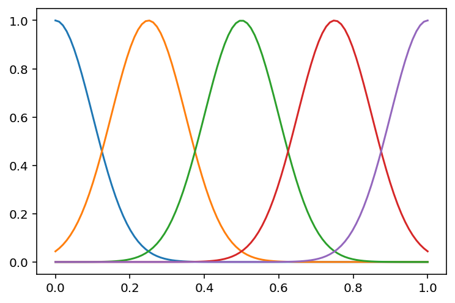
lr = LinearRegression()
lr.fit(X, y)
lr.coef_, lr.intercept_(array([-0.03558785, -0.09144039, -0.92094484, -0.32654565, 0.75825773]),
1.0918335515196196)# Plot the predictions
plt.plot(x, y, 'o', label='data')
plt.plot(x, lr.predict(X), label='gaussian 5')
plt.legend(loc='best')<matplotlib.legend.Legend at 0x7f882eb83040>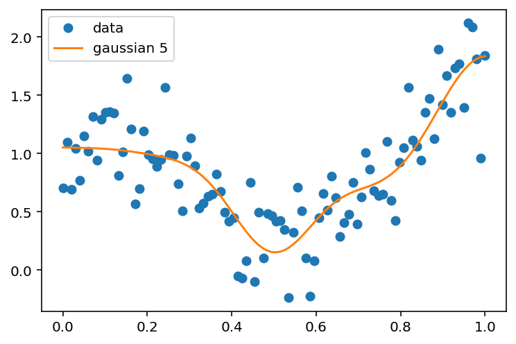
# Plot each of the scaled basis functions (scaling by the coefficients)
for i in range(d):
plt.plot(x, lr.coef_[i] * X[:, i], label=f'basis {i} coefficient {lr.coef_[i]:.2f}')
plt.plot(x, y, 'o', label='data')
plt.plot(x, lr.predict(X), label='gaussian 5', lw = 5)
# Legend outside the plot
plt.legend(loc='center left', bbox_to_anchor=(1, 0.5))
<matplotlib.legend.Legend at 0x7f882e8b6cd0>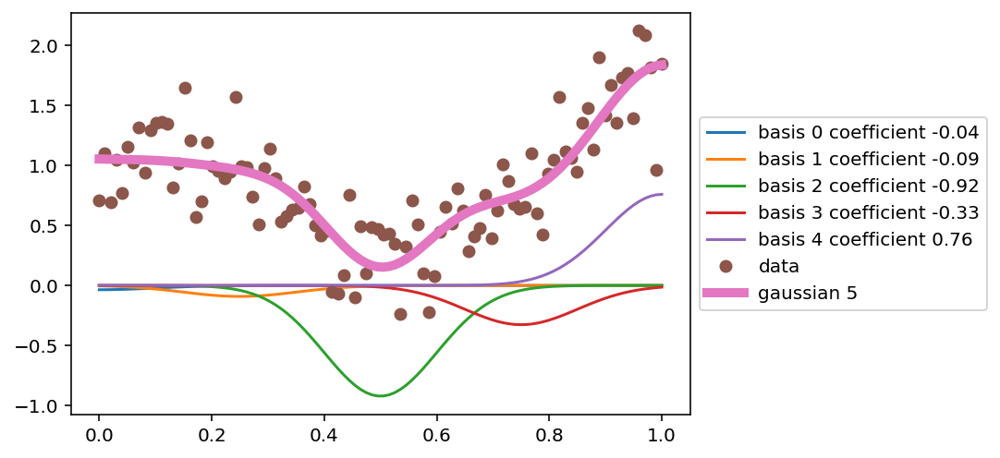
# plot high degree Gaussian basis
d = 15
mu = np.linspace(0, 1, d)
sigma = np.ones(d) * 0.1
fit_phi_gaussian = lambda x: phi_gaussian(x, d, mu, sigma)
y_hat_gaussian_15 = y_hat_basis(x, y, x, fit_phi_gaussian)
plt.plot(x, y, 'o', label='data', alpha=0.1)
plt.plot(x, y_hat_gaussian_5, label='gaussian 5')
plt.plot(x, y_hat_gaussian_15, label='gaussian 15')
d = 30
mu = np.linspace(0, 1, d)
sigma = np.ones(d) * 0.1
fit_phi_gaussian = lambda x: phi_gaussian(x, d, mu, sigma)
y_hat_gaussian_30 = y_hat_basis(x, y, x, fit_phi_gaussian)
plt.plot(x, y_hat_gaussian_30, label='gaussian 30')
plt.legend(loc='best')<matplotlib.legend.Legend at 0x7f882e085c10>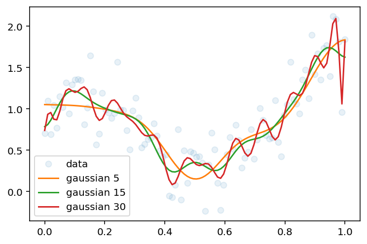